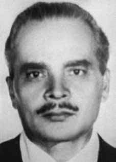

David
Capistrano
da Costa
CIRCUNSTÂNCIAS DA MORTE
O último contato feito por David Capistrano ocorreu no dia 19 de março de 1974, quando Lídia, esposa de José Roman, seu companheiro na viagem de retorno ao Brasil, recebeu um telegrama do marido afirmando que a operação de resgate de Capistrano, na fronteira entre Brasil e Argentina, havia sido bem sucedida e ambos já se encontravam a caminho de São Paulo. Em 21 de março, o filho de José Roman, Luís, recebeu um telefonema comunicando que o pai estava preso. Os familiares registraram queixa do desaparecimento e fizeram pedidos de busca aos diversos órgãos de segurança, mas não obtiveram resposta satisfatória. As esposas dos desaparecidos deram entrada no pedido de habeas corpus, em 25/3/1974, mas os órgãos de segurança negaram as prisões. O caso ganhou repercussão internacional e o então presidente da França, Valéry Giscard d’Estaing, enviou uma carta ao governo brasileiro solicitando esclarecimentos sobre o destino de Capistrano, considerado herói de guerra por ter resistido à invasão nazista em território francês. Na ocasião, a Embaixada brasileira negou que David Capistrano estivesse preso e alegou desconhecer seu paradeiro. No mesmo ano os familiares de David se encontraram com o general Golbery do Couto e Silva. Na reunião, intermediada pelo então Arcebispo de São Paulo, Dom Paulo Evaristo Arns, o general se prontificou a solucionar o caso, o que não chegou a acontecer. Em janeiro de 1975, um relatório produzido por familiares de desaparecidos políticos, contendo casos de dezenove desaparecimentos, foi encaminhado ao presidente Ernesto Geisel. Um mês após o envio, o então ministro da Justiça, Armando Falcão, fez circular, pelos jornais e pela televisão, uma nota sobre o paradeiro dos desaparecidos relacionados no relatório. Nesse documento, constava que David Capistrano estaria exilado na Tchecoslováquia. Em março de 1978, em resposta à solicitação expedida pela Anistia Internacional, o então presidente do Superior Tribunal Militar (STM), Hélio Leite, reconheceu a prisão de David Capistrano. Entretanto, afirmou que David foi mantido preso por apenas uma semana, sendo posteriormente liberado, sem indicar com precisão a data e o local da suposta prisão. A partir dos indícios presentes em declarações e documentos relacionados ao caso, Maria Augusta de Oliveira visitou o DOI-CODI do Rio de Janeiro, o Manicômio do Juqueri em Franco da Rocha (SP) e as dependências do Exército, da Marinha e da Aeronáutica nas duas cidades, sem chegar a nenhuma resposta concreta sobre o caso. Em relatório do Centro de Informações do Exército (CIE), do Ministério do Exército, o nome de David Capistrano aparece integrando uma lista de mortos e desaparecidos políticos sem que as datas ou locais estejam especificados. i Em entrevista publicada na revisa IstoÉ, de abril de 1987, o médico Amílcar Lobo, que na ocasião do desaparecimento de David Capistrano atuava no DOI-CODI-RJ, declarou ter atendido diversos presos nas dependências da chamada “Casa da Morte de Petrópolis”. Posteriormente, declarou à filha de Capistrano que o seu pai teria sido torturado e morto no local. Em novembro de 1992, o ex-sargento Marival Dias Chaves, em declaração à revista Veja, afirmou que depois de ter sido levado preso para o DOI-CODI-SP, Capistrano teria sido levado à “Casa da Morte de Petrópolis”. Torturado até a morte, David teria sido esquartejado e seus restos mortais jogados em um rio próximo ao local. Em março de 2004, Marival Chaves deu uma nova entrevista à revista IstoÉ, declarando que o caso de David Capistrano e de José Roman estava ligado a uma ofensiva dos órgãos de segurança para desmantelar o PCB. Segundo o relato de Marival, o comando da operação teria ficado a cargo do chefe do DOI, coronel Audir dos Santos Maciel, conhecido como Dr. Silva. Maciel teria sido um dos responsáveis pela Operação Radar, que eliminou diversos militantes do PCB entre 1974 e 1976. Em depoimento à CNV em 7 de fevereiro de 2014, Marival Chaves deu mais detalhes sobre a participação de agentes do CIE no sequestro de David Capistrano e José Roman: David Capistrano foi preso por uma operação desenvolvida pelo CIE que envolveu infiltrados no eixo […] fronteira do Brasil com Argentina e em São Paulo. Por que eu sei? Porque Capistrano pernoitou no DOI enquanto a equipe chefiada pelo José Brant foi para o Hotel. Os dois presos, ele e José Roman dormiram no DOI. E coincidentemente eu estava chegando para trabalhar lá às oito horas da manhã e vi dois presos entrando no porta-malas de uma Veraneio. E quem estava lá? Rubens Gomes Carneiro, o senhor José Brant Teixeira e mais o senhor cabo Félix Freire Dias. Então eram três pessoas do CIE. De repente, aparece para mim depois o David Capistrano e o José Roman como pessoas desaparecidas. Ora! Eles dormiram no DOI. Entre março de 1974 e janeiro de 1976, foram mortos pela operação Radar, David Capistrano da Costa; José Roman; Walter de Souza Ribeiro; João Massena Melo; Luís Ignácio Maranhão Filho; Elson Costa; Hiran de Lima Pereira; Jayme Amorim de Miranda; Nestor Vera; Itair José Veloso; Alberto Aleixo; José Ferreira de Almeida; José Maximino de Andrade Netto; Pedro Jerônimo de Souza; José Montenegro de Lima,o Magrão; Orlando da Silva Rosa Bomfim Júnior; Vladimir Herzog; Neide Alves dos Santos; e Manoel Fiel Filho. Em 23 de julho de 2014, o ex-delegado de polícia Cláudio Guerra afirmou, em depoimento prestado à Comissão Nacional da Verdade, que David Capistrano teria passado pela “Casa da Morte de Petrópolis”, e que ele próprio teria levado o corpo de David de Petrópolis para ser incinerado na usina Cambahyba, na região de Campos dos Goytacazes, no norte do Rio de Janeiro, com o intuito de dificultar a localização e identificação de seus restos mortais. A CNV verificou que Freddie Perdigão Pereira, em cuja equipe Cláudio Guerra trabalhava, prestava na época dos fatos serviços para o DOI/CODI do II Exército. Em resposta ao pedido de informação feito pela Comissão Nacional da Verdade, o Ministério da Defesa afirmou que, após uma exaustiva pesquisa feita em mais de 8 mil páginas de documentos, não foi possível identificar nenhuma informação relevante referente à localização e/ou elucidação das circunstâncias do desaparecimento de David Capistrano. Até a presente data David Capistrano da Costa permanece desaparecido.
The last contact made by David Capistrano occurred on March 19, 1974, when Lídia, wife of José Roman, his companion on the return trip to Brazil, received a telegram from her husband stating that the rescue operation for Capistrano, on the border between Brazil and Argentina, had been successful and both were already on their way to São Paulo. On March 21, José Roman's son, Luís, received a call saying that his father was arrested. The family members filed a complaint about the disappearance and made search requests to various security agencies, but did not receive a satisfactory response. The wives of the disappeared filed a request for habeas corpus on 3/25/1974, but the security agencies denied the arrests. The case gained international repercussion and the then president of France, Valéry Giscard d’Estaing, sent a letter to the Brazilian government requesting clarification on the fate of Capistrano, considered a war hero for having resisted the Nazi invasion of French territory. At the time, the Brazilian Embassy denied that David Capistrano was in prison and claimed to be unaware of his whereabouts. In the same year, David's family met with General Golbery do Couto e Silva. At the meeting, mediated by the then Archbishop of São Paulo, Dom Paulo Evaristo Arns, the general offered to resolve the case, which did not happen. In January 1975, a report produced by relatives of missing politicians, containing cases of nineteen disappearances, was sent to President Ernesto Geisel. A month after sending, the then Minister of Justice, Armando Falcão, circulated, in newspapers and on television, a note about the whereabouts of the missing people listed in the report. This document stated that David Capistrano was in exile in Czechoslovakia. In March 1978, in response to a request issued by Amnesty International, the then president of the Superior Military Court (STM), Hélio Leite, recognized the arrest of David Capistrano. However, he stated that David was kept in prison for just a week, and was later released, without indicating precisely the date and place of the supposed arrest. Based on the evidence present in statements and documents related to the case, Maria Augusta de Oliveira visited the DOI-CODI in Rio de Janeiro, the Juqueri Manicômio in Franco da Rocha (SP) and the Army, Navy and Air Force facilities in both cities, without reaching any concrete answer about the case. In a report from the Army Information Center (CIE), of the Ministry of the Army, the name of David Capistrano appears on a list of dead and missing politicians without the dates or locations being specified. i In an interview published in the magazine IstoÉ, in April 1987, doctor Amílcar Lobo, who at the time of David Capistrano's disappearance worked at DOI-CODI-RJ, declared that he had treated several prisoners in the premises of the so-called “House of Death in Petrópolis”. He later told Capistrano's daughter that her father had been tortured and killed on the spot. In November 1992, former sergeant Marival Dias Chaves, in a statement to Veja magazine, stated that after being arrested at DOI-CODI-SP, Capistrano had been taken to the “House of Death in Petrópolis”. Tortured to death, David was reportedly dismembered and his remains thrown into a nearby river. In March 2004, Marival Chaves gave a new interview to IstoÉ magazine, declaring that the case of David Capistrano and José Roman was linked to an offensive by security agencies to dismantle the PCB. According to Marival's report, command of the operation would have been the responsibility of the head of the DOI, Colonel Audir dos Santos Maciel, known as Dr. Silva. Maciel would have been one of those responsible for Operation Radar, which eliminated several PCB militants between 1974 and 1976. In a statement to the CNV on February 7, 2014, Marival Chaves gave more details about the participation of CIE agents in the kidnapping of David Capistrano and José Roman: David Capistrano was arrested for an operation carried out by the CIE that involved infiltrators on the […] border between Brazil and Argentina and in São Paulo. Why do I know? Because Capistrano spent the night at DOI while the team led by José Brant went to the Hotel. The two prisoners, he and José Roman, slept at the DOI. And coincidentally, I was arriving to work there at eight o'clock in the morning and saw two prisoners getting into the trunk of a summer house. And who was there? Rubens Gomes Carneiro, Mr. José Brant Teixeira and Mr. Corporal Félix Freire Dias. So there were three people from CIE. Suddenly, David Capistrano and José Roman appear to me as missing people. Now! They slept at DOI. Between March 1974 and January 1976, David Capistrano da Costa was killed by Operation Radar; José Roman; Walter de Souza Ribeiro; João Massena Melo; Luís Ignácio Maranhão Filho; Elson Costa; Hiran de Lima Pereira; Jayme Amorim de Miranda; Nestor Vera; Itair José Veloso; Alberto Aleixo; José Ferreira de Almeida; José Maximino de Andrade Netto; Pedro Jerônimo de Souza; José Montenegro de Lima, Skinny; Orlando da Silva Rosa Bomfim Júnior; Vladimir Herzog; Neide Alves dos Santos; and Manoel Fiel Filho. On July 23, 2014, former police chief Cláudio Guerra stated, in a statement given to the National Truth Commission, that David Capistrano had passed through the “House of Death in Petrópolis”, and that he himself had taken David's body from Petrópolis to be incinerated at the Cambahyba plant, in the Campos dos Goytacazes region, in the north of Rio de Janeiro, with the aim of making it difficult to locate and identify his remains. mortals. The CNV verified that Freddie Perdigão Pereira, on whose team Cláudio Guerra worked, was providing services for the DOI/CODI of the II Army at the time of the events. In response to the request for information made by the National Truth Commission, the Ministry of Defense stated that, after an exhaustive search carried out on more than 8 thousand pages of documents, it was not possible to identify any relevant information regarding the location and/or elucidation of the circumstances of David Capistrano's disappearance. To date, David Capistrano da Costa remains missing.
El último contacto de David Capistrano se produjo el 19 de marzo de 1974, cuando Lídia, esposa de José Roman, su compañero de viaje de regreso a Brasil, recibió un telegrama de su marido comunicándole que la operación de rescate de Capistrano, en la frontera entre Brasil y Argentina, había sido exitosa y ambos ya se encontraban camino de São Paulo. El 21 de marzo, el hijo de José Román, Luís, recibió una llamada informándole que su padre estaba detenido. Los familiares presentaron una denuncia por la desaparición y realizaron pedidos de búsqueda a diversos organismos de seguridad, pero no obtuvieron una respuesta satisfactoria. Las esposas de los desaparecidos presentaron un pedido de hábeas corpus el 25/03/1974, pero los organismos de seguridad negaron las detenciones. El caso cobró repercusión internacional y el entonces presidente de Francia, Valéry Giscard d'Estaing, envió una carta al gobierno brasileño solicitando aclaraciones sobre el destino de Capistrano, considerado un héroe de guerra por haber resistido la invasión nazi del territorio francés. En ese momento, la Embajada de Brasil negó que David Capistrano estuviera en prisión y afirmó desconocer su paradero. Ese mismo año, la familia de David se reunió con el general Golbery do Couto e Silva. En la reunión, mediada por el entonces arzobispo de São Paulo, Dom Paulo Evaristo Arns, el general se ofreció a resolver el caso, lo que no sucedió. En enero de 1975, se envió al presidente Ernesto Geisel un informe elaborado por familiares de políticos desaparecidos, que contenía casos de diecinueve desapariciones. Un mes después del envío, el entonces ministro de Justicia, Armando Falcão, hizo circular en periódicos y televisión una nota sobre el paradero de las personas desaparecidas que figuran en el informe. En dicho documento se afirmaba que David Capistrano se encontraba exiliado en Checoslovaquia. En marzo de 1978, en respuesta a un pedido emitido por Amnistía Internacional, el entonces presidente del Tribunal Superior Militar (STM), Hélio Leite, reconoció la detención de David Capistrano. Sin embargo, afirmó que David permaneció en prisión apenas una semana, y luego fue liberado, sin indicar con precisión la fecha y lugar del supuesto arresto. Con base en las pruebas presentes en declaraciones y documentos relacionados con el caso, María Augusta de Oliveira visitó el DOI-CODI en Río de Janeiro, el Juqueri Manicômio en Franco da Rocha (SP) y las instalaciones del Ejército, la Armada y la Fuerza Aérea en ambas ciudades, sin llegar a ninguna respuesta concreta sobre el caso. En un informe del Centro de Información del Ejército (CIE), del Ministerio del Ejército, el nombre de David Capistrano aparece en una lista de políticos muertos y desaparecidos sin que se especifiquen fechas ni lugares. i En una entrevista publicada en la revista IstoÉ, en abril de 1987, el médico Amílcar Lobo, que en el momento de la desaparición de David Capistrano trabajaba en el DOI-CODI-RJ, declaró haber atendido a varios detenidos en las instalaciones de la llamada “Casa de la Muerte en Petrópolis”. Más tarde le dijo a la hija de Capistrano que su padre había sido torturado y asesinado en el acto. En noviembre de 1992, el ex sargento Marival Dias Chaves, en declaraciones a la revista Veja, afirmó que luego de ser detenido en el DOI-CODI-SP, Capistrano había sido trasladado a la “Casa de la Muerte en Petrópolis”. Según los informes, David fue torturado hasta la muerte, desmembrado y arrojado sus restos a un río cercano. En marzo de 2004, Marival Chaves concedió una nueva entrevista a la revista IstoÉ, declarando que el caso de David Capistrano y José Roman estaba vinculado a una ofensiva de los organismos de seguridad para desmantelar el PCB. Según el informe de Marival, el mando de la operación habría estado a cargo del jefe del DOI, coronel Audir dos Santos Maciel, conocido como Dr. Silva. Maciel habría sido uno de los responsables de la Operación Radar, que eliminó a varios militantes del PCB entre 1974 y 1976. En declaración ante la CNV el 7 de febrero de 2014, Marival Chaves dio más detalles sobre la participación de agentes de la CIE en el secuestro de David Capistrano y José Roman: David Capistrano fue detenido por una operación realizada por la CIE que involucró a infiltrados en la […] frontera entre Brasil y Argentina y en São Paulo. ¿Por qué lo sé? Porque Capistrano pasó la noche en el DOI mientras el equipo dirigido por José Brant se dirigía al Hotel. Los dos detenidos, él y José Román, durmieron en el DOI. Y casualmente llegaba a trabajar allí a las ocho de la mañana y vi a dos presos metiéndose en el maletero de una casa de verano. ¿Y quién estaba ahí? Rubens Gomes Carneiro, Sr. José Brant Teixeira y Sr. Cabo Félix Freire Dias. Entonces había tres personas del CIE. De repente, David Capistrano y José Roman se me aparecen como personas desaparecidas. ¡Ahora! Dormieron en el DOI. Entre marzo de 1974 y enero de 1976, David Capistrano da Costa fue asesinado por la Operación Radar; José Román; Walter de Souza Ribeiro; João Massena Melo; Luís Ignacio Maranhão Filho; Elson Costa; Hirán de Lima Pereira; Jayme Amorim de Miranda; Néstor Vera; Itair José Veloso; Alberto Aleixo; José Ferreira de Almeida; José Maximino de Andrade Netto; Pedro Jerónimo de Souza; José Montenegro de Lima, Flaco; Orlando da Silva Rosa Bomfim Júnior; Vladímir Herzog; Neide Alves dos Santos; y Manoel Fiel Filho. El 23 de julio de 2014, el exjefe de policía Cláudio Guerra afirmó, en declaración ante la Comisión Nacional de la Verdad, que David Capistrano había pasado por la “Casa de la Muerte en Petrópolis”, y que él mismo había sacado el cuerpo de David de Petrópolis para ser incinerado en la planta de Cambahyba, en la región de Campos dos Goytacazes, en el norte de Río de Janeiro, con el objetivo de dificultar la localización e identificación de sus restos. mortales. La CNV constató que Freddie Perdigão Pereira, en cuyo equipo trabajaba Cláudio Guerra, se encontraba prestando servicios para el DOI/CODI del II Ejército en el momento de los hechos. En respuesta al pedido de información realizado por la Comisión Nacional de la Verdad, el Ministerio de Defensa manifestó que, luego de una búsqueda exhaustiva realizada en más de 8 mil páginas de documentos, no fue posible identificar ningún dato relevante sobre el lugar y/o esclarecimiento de las circunstancias de la desaparición de David Capistrano. Hasta la fecha, David Capistrano da Costa sigue desaparecido.